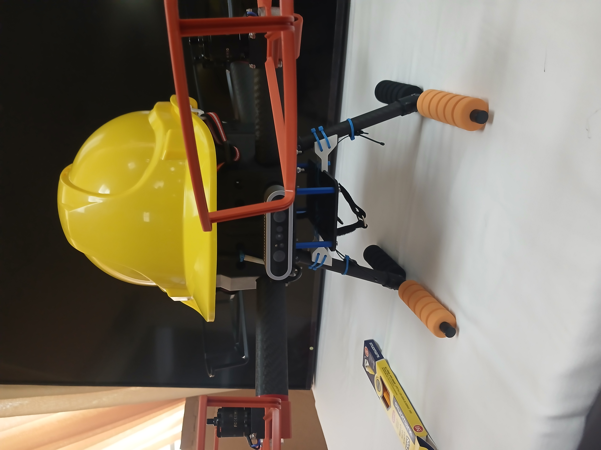
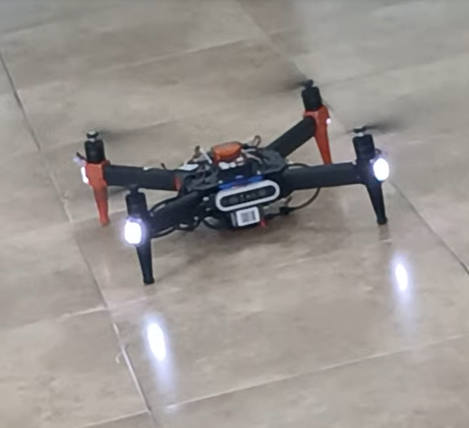

01
UAV • GPS • RESTORATION
HCIT UAV Restoration
After Hurricane Melissa left multiple drones dismantled or damaged, Ryan Gibson and I cleaned, assessed and rebuilt the available systems. We returned two UAVs to functional condition, with my aircraft reaching GPS goal/waypoint navigation before the project period ended.